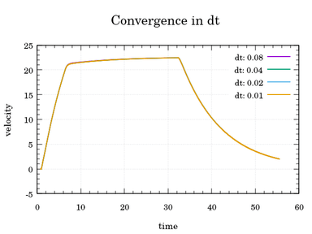
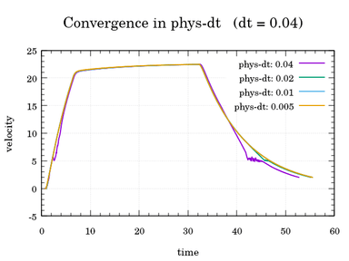
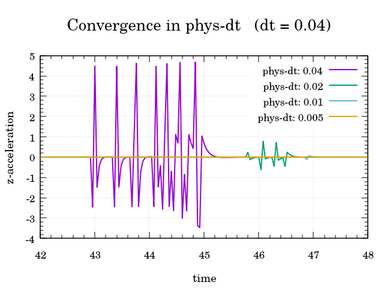

Synchrony and time-step
This section deals with two fundamental concepts in CARLA. Their configuration defines how does time go by in the simulation, and how does the server make the simulation move forward.
Simulation time-step
There is a difference between real time, and simulation time. The simulated world has its own clock and time, conducted by the server. Computing two simulation steps takes some real time. However, there is also the time span that went by between those two simulation moments, the time-step.
To clarify, the server can take a few milliseconds to compute two steps of a simulation. However, the time-step between those two simulation moments can be configured to be, for instance, always a second.
Time-step can be fixed or variable depending on user preferences.
Note
Time-step and synchrony are intertwined concepts. Make sure to read both sections to get a full understanding of how does CARLA work.
Variable time-step
The default mode in CARLA. The simulation time that goes by between steps will be the time that the server takes to compute these.
settings = world.get_settings()
settings.fixed_delta_seconds = None # Set a variable time-step
world.apply_settings(settings)
PythonAPI/util/config.py sets the time-step using an argument. Zero equals variable time-step.
cd PythonAPI/util && python3 config.py --delta-seconds 0
Fixed time-step
The elapsed time remains constant between steps. If it is set to 0.5 seconds, there will be two frames per simulated second. Using the same time increment on each step is the best way to gather data from the simulation. Physics and sensor data will correspond to an easy to comprehend moment of the simulation. Also, if the server is fast enough, it makes possible to simulate longer time periods in less real time.
Fixed delta seconds can be set in the world settings. To run the simulation at a fixed time-step of 0.05 seconds apply the following settings. In this case, the simulator will take twenty steps (1/0.05) to recreate one second of the simulated world.
settings = world.get_settings()
settings.fixed_delta_seconds = 0.05
world.apply_settings(settings)
This can also be set using the provided script PythonAPI/util/config.py.
cd PythonAPI/util && python3 config.py --delta-seconds 0.05
Tips when recording the simulation
CARLA has a recorder feature that allows a simulation to be recorded and then reenacted. However, when looking for precision, some things need to be taken into account.
-
With a fixed time-step, reenacting it will be easy. The server can be set to the same time-step used in the original simulation.
-
With a variable time-step, things are a bit more complicated.
-
If the server runs with a variable time-step, the time-steps will be different from the original one, as logic cycles differ from time to time. The information will then be interpolated using the recorded data.
-
If the server is forced to reproduce the exact same time-steps, the steps simulated will be the same, but the real time between them changes. Time-steps should be passed one by one. Those original time-steps were the result of the original simulation running as fast as possible. As the time taken to represent these will mostly be different, the simulation is bound to be reproduced with weird time fluctuations.
-
There is also a float-point arithmetic error that variable time-step introduces. The simulation is running with a time-step equal to the real one. Real time is a continuous variable, represented in the simulation with a
floatvalue, which has decimal limitations. The time that is cropped for each step accumulates, and prevents the simulation from a precise repetition of what has happened.
-
Physics substepping
Physics must be computed within very low time steps to be precise. This can be an issue when selecting a delta time for our simulation in which we usually perform multiple computations at each frame, for example with sensor rendering. As this limitation only happens due to the physics simulation, we can apply substeps to only the physical computations. This is enabled by default and is set to have a maximum of 10 physics substeps with a maximum physical delta time of 0.01.
These options can be changed through the API in the world settings as:
settings = world.get_settings()
settings.substepping = True
settings.max_substep_delta_time = 0.01
settings.max_substeps = 10
world.apply_settings(settings)
Be aware that if you have set synchronous mode and the fixed time step then substepping options need to be consistent with the value of the fixed delta seconds. The condition to be fulfilled is:
fixed_delta_seconds <= max_substep_delta_time * max_substeps
In order to have an optimal physical simulation, the substep delta time should at least
be below 0.01666 and ideally below 0.01.
To demonstrate the effect of optimal physical sub-stepping, consider the following graphs. The first graph shown below illustrates velocity over time in simulations with different fixed simulation time steps. The physical delta time is constant in all simulations at the default value of 0.01. We can see that velocity is not affected by the difference in simulation time steps only.

The second graph shows velocity over time in simulations with a fixed simulation time step of 0.04. We can see that once the physical delta time surpasses 0.01, deviations start to occur in the constancy of velocity, increasing in severity as physical delta time increases.

We can demonstrate this deviation again by showing the effect of the same difference in physical delta time with a fixed simulation time step in the measurement of z-acceleration, with convergence occurring only when the physical delta time is 0.01 or less.

Client-server synchrony
CARLA is built over a client-server architecture. The server runs the simulation. The client retrieves information, and demands for changes in the world. This section deals with communication between client and server.
By default, CARLA runs in asynchronous mode. The server runs the simulation as fast as possible, without waiting for the client. On synchronous mode, the server waits for a client tick, a "ready to go" message, before updating to the following simulation step.
Note
In a multiclient architecture, only one client should tick. The server reacts to every tick received as if it came from the same client. Many client ticks will make the create inconsistencies between server and clients.
Setting synchronous mode
Changing between synchronous and asynchronous mode is just a matter of a boolean state.
settings = world.get_settings()
settings.synchronous_mode = True # Enables synchronous mode
world.apply_settings(settings)
Warning
If synchronous mode is enabled, and there is a Traffic Manager running, this must be set to sync mode too. Read this to learn how to do it.
To disable synchronous mode just set the variable to false or use the script PythonAPI/util/config.py.
cd PythonAPI/util && python3 config.py --no-sync # Disables synchronous mode
Synchronous mode cannot be enabled using the script, only disabled. Enabling the synchronous mode makes the server wait for a client tick. Using this script, the user cannot send ticks when desired.
Using synchronous mode
The synchronous mode becomes specially relevant with slow client applications, and when synchrony between different elements, such as sensors, is needed. If the client is too slow and the server does not wait, there will be an overflow of information. The client will not be able to manage everything, and it will be lost or mixed. On a similar tune, with many sensors and asynchrony, it would be impossible to know if all the sensors are using data from the same moment in the simulation.
The following fragment of code extends the previous one. The client creates a camera sensor, stores the image data of the current step in a queue, and ticks the server after retrieving it from the queue. A more complex example regarding several sensors can be found here.
settings = world.get_settings()
settings.synchronous_mode = True
world.apply_settings(settings)
camera = world.spawn_actor(blueprint, transform)
image_queue = queue.Queue()
camera.listen(image_queue.put)
while True:
world.tick()
image = image_queue.get()
Important
Data coming from GPU-based sensors, mostly cameras, is usually generated with a delay of a couple of frames. Synchrony is essential here.
The world has asynchrony methods to make the client wait for a server tick, or do something when it is received.
# Wait for the next tick and retrieve the snapshot of the tick.
world_snapshot = world.wait_for_tick()
# Register a callback to get called every time we receive a new snapshot.
world.on_tick(lambda world_snapshot: do_something(world_snapshot))
Possible configurations
The configuration of time-step and synchrony, leads for different settings. Here is a brief summary on the possibilities.
| Fixed time-step | Variable time-step | |
|---|---|---|
| Synchronous mode | Client is in total control over the simulation and its information. | Risk of non reliable simulations. |
| Asynchronous mode | Good time references for information. Server runs as fast as possible. | Non easily repeatable simulations. |
-
Synchronous mode + variable time-step. This is almost for sure a non-desirable state. Physics cannot run properly when the time-step is bigger than 0.1s and. If the server has to wait for the client to compute the steps, this is likely to happen. Simulation time and physics will not be in synchrony. The simulation will not be reliable.
-
Asynchronous mode + variable time-step. This is the default CARLA state. Client and server are asynchronous. The simulation time flows according to the real time. Reenacting the simulation needs to take into account float-arithmetic error, and possible differences in time steps between servers.
-
Asynchronous mode + fixed time-step. The server will run as fast as possible. The information retrieved will be easily related with an exact moment in the simulation. This configuration makes possible to simulate long periods of time in much less real time, if the server is fast enough.
-
Synchronous mode + fixed time-step. The client will rule the simulation. The time step will be fixed. The server will not compute the following step until the client sends a tick. This is the best mode when synchrony and precision is relevant. Especially when dealing with slow clients or different elements retrieving information.
Warning
In synchronous mode, always use a fixed time-step. If the server has to wait for the user, and it is using a variable time-step, time-steps will be too big. Physics will not be reliable. This issue is better explained in the time-step limitations section.
Physics determinism
CARLA supports physics and collision determinism under specific circumstances:
- Synchronous mode and fixed delta seconds must be enabled: Determinism requires the client to be in perfect sync with the server to ensure that commands are applied correctly and to produce accurate and reproducible results. A constant time step must be enforced by setting
fixed_delta_seconds. If this is not set, the time step will be automatically computed at each step depending on the simulation performance. - Synchronous mode must be enabled before loading or reloading the world: Differing timestamps can arise if the world is not in synchronous mode from the very beginning. This can generate small differences in physics simulation and in the life cycle of objects such as traffics lights.
- The world must be reloaded for each new repetition: Reload the world each time you want to reproduce a simulation.
- Commands should be batched instead of issued one at a time: Although rare, in a busy simulation or overloaded server, single issued commands can become lost. If commands are batched in a
apply_batch_synccommand, the command is guaranteed to be executed or return a failure response.
Here is an example of the steps mentioned above:
client = carla.Client(HOST, PORT) # connect to the server
client.set_timeout(10.0)
world = client.get_world()
# Load the desired map
client.load_world("Town10HD_Opt")
# Set synchronous mode settings
new_settings = world.get_settings()
new_settings.synchronous_mode = True
new_settings.fixed_delta_seconds = 0.05
world.apply_settings(new_settings)
client.reload_world(False) # reload map keeping the world settings
# Set up the traffic manager
traffic_manager = client.get_trafficmanager(TM_PORT)
traffic_manager.set_synchronous_mode(True)
traffic_manager.set_random_device_seed(SEED) # define TM seed for determinism
# Spawn your vehicles, pedestrians, etc.
# Simulation loop
while True:
# Your code
world.tick()
And a particular example for the playback feature:
client = carla.Client(HOST, PORT) # connect to the server
client.set_timeout(10.0)
world = client.get_world()
# Load the desired map
client.load_world("Town10HD_Opt")
# Set synchronous mode settings
new_settings = world.get_settings()
new_settings.synchronous_mode = True
new_settings.fixed_delta_seconds = 0.05
world.apply_settings(new_settings)
client.reload_world(False) # reload map keeping the world settings
client.replay_file(FILE_TO_PLAY, 0, 0, 0, False)
world.tick() # a tick is necessary for the server to process the replay_file command
# Simulation loop
while True:
# Your code
world.tick()
Running these steps will ensure the same outcome for every simulation run.
That is all there is to know about the roles of simulation time and client-server synchrony in CARLA.
Open CARLA and mess around for a while. Any suggestions or doubts are welcome in the forum.